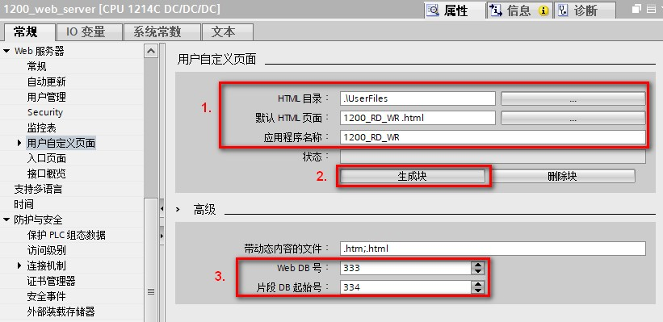

用户程序必须包含并执行 WWW 指令，以便能够通过标准 Web 页面访问用户定义 Web 页面。控制数据块是 WWW 指令的输入参数，指定如片段数据块中所表示的页面内容、状态以及控制信息。在组态用户定义 Web 页面时单击"生成块"按钮后，TIA Portal 便会创建控制数据块，如图 1 所示。

图 1. Web Server 生成数据块
要通过标准 Web 页面访问用户定义的 Web 页面，程序必须执行 WWW 指令。如果希望用户定义的 Web 页面仅在应用程序要求和首选项指定的一些情况下可用。在这种情况下，程序逻辑可控制何时调用 WWW 指令，如图 2 所示。
图 2. Web Server 程序调用 WWW 指令
WWW 指令位于“通信指令 > WEB 服务器”指令库下，如图 3 所示。
图 3. WWW指令
CTRL_DB 参数对应于控制 DB 的 DB 编号，参考图 1 的标注 3 处的 “Web DB 号”，该参数必须正确填写。返回值 (RET_VAL) 包含函数结果。
注意，WWW 指令异步执行，RET_VAL 输出的初始值可能为 0，但这不能说明后来不会发生错误。
程序会检查控制 DB 的状态，以确定应用程序是否已成功启动，或者通过随后对 WWW 的调用来检查 RET_VAL。表 1 为 RET_VAL 的值说明。
表 1 RET_VAL 的值说明
RET_VAL |
说明 |
0 |
无错误 |
16#00yx |
x： 相关位声称的请求处于等待状态： x=1： 请求 0 x=2： 请求 1 x=4： 请求 2 x=8： 请求 3 可以对 x 值进行逻辑或运算，以说明多个请求处于等待状态。 例如，如果 x = 6，则说明请求 1 和请求 2 处于等待状态。 y： 0: 没有错误；1： 存在错误，并且已在控制 DB 中置位"last_error" |
16#803a |
未装载控制 DB。 |
16#8081 |
控制 DB 的类型、格式或版本错误。 |
16#80C1 |
没有资源可用于初始化 Web 应用程序。 |